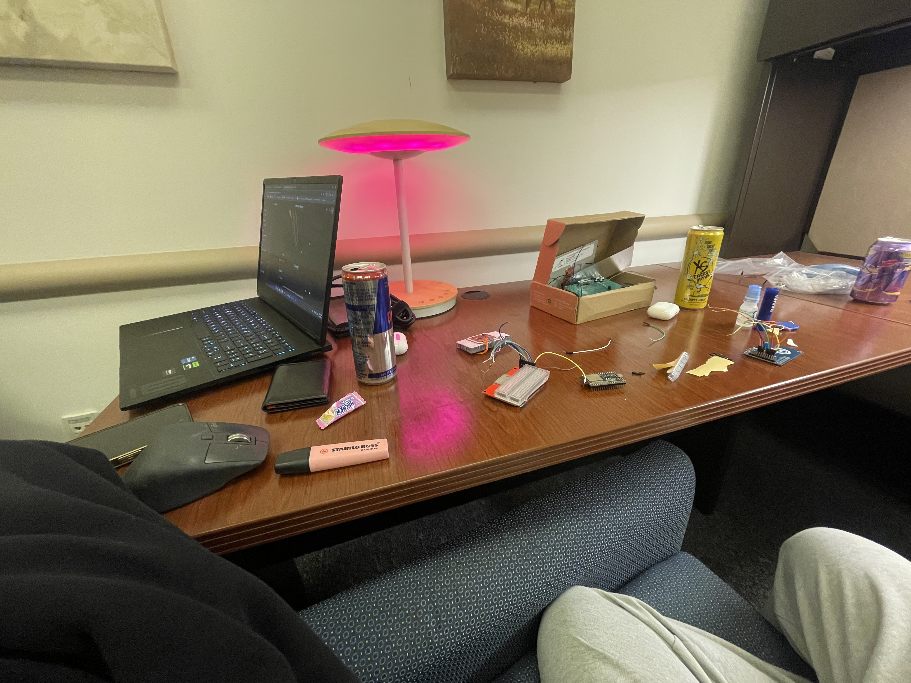
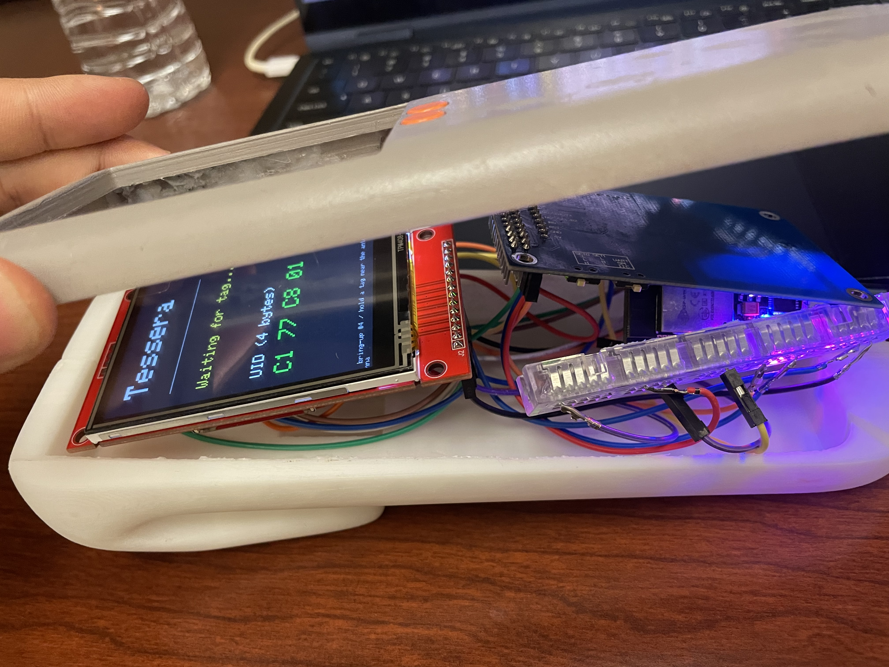
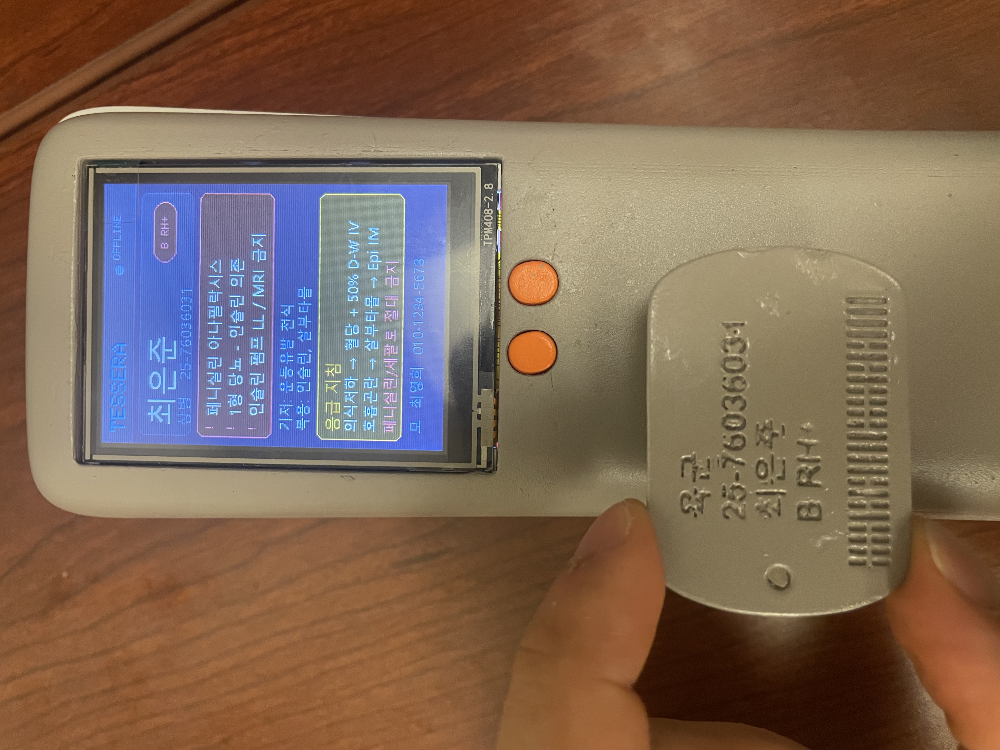

Tessera
Offline encrypted NFC medical records
Issue / Solution
The Issue: During high-stress military field operations or emergency triage scenarios, medics require instant access to a casualty's critical medical history (blood type, severe allergies, active prescriptions). However, active combat zones are highly disconnected, making cloud-based records impossible, while printing physical cards is highly prone to wear, loss, and unauthorized disclosure of sensitive data.
The Solution: I gathered and led the team to build Tessera, an offline medical-records system. It stores compressed, AES-256-GCM encrypted medical records on standard-issue NFC dog tags. Medics use a rugged, low-cost handheld scanner built with an ESP32 WROOM-32D, PN532 NFC reader, and TFT display. The scanner reads the tag, derives a unique per-tag key using HKDF-SHA256, decrypts the payload with a pre-flashed master key index, and displays emergency details in under 1 second without any internet dependency.
Overview
Tessera is an offline military medical-records system built around encrypted NFC dog tags. It combines a Windows admin station, an encrypted local database, NFC provisioning, and ESP32 field-reader hardware for disconnected environments.
Recognition
I gathered and led the Tessera team, helping guide the product, software, security, and hardware plan. The project placed 7th out of 700 teams in the ROK Army business competition, and was awarded and promoted by the Korea Economic Daily News and the ROK Department of Defense.

We are now preparing for the next-level competition: the ROK Department of Defense business competition. That next phase is focused on hardening the prototype, improving the field-reader workflow, and making the system easier to evaluate as a practical military medical-records tool.
System Architecture
Tessera operates entirely offline. The PC station provisions tags via USB serial, while the handheld ESP32 unit performs cryptographic decryption in the field.
System Architecture
The System Overview
Tessera has two sides. The PC station registers personnel, encrypts records, and writes payloads to NFC tags. The field unit uses ESP32 hardware with a PN532 NFC reader and TFT display to read a tag, decrypt the payload with a pre-flashed master key, and show the record in the field.
The prototype was designed around low-cost, rapidly available parts: an ESP32 WROOM 32D NodeMCU, PN532 NFC module, small TFT/OLED display, half-size breadboard, and Dupont wiring. The target scanner bill of materials was roughly USD 20 to 25 (KRW 26,000 to 32,000), with NFC tag cost under USD 0.80 (KRW 1,000), making the concept realistic for unit-level field trials.
Hardware Bring-Up & Prototype Phases
Hardware construction followed a rigorous staged testing approach. The process moved from bare breadboards to fully enclosed handheld medical scanners.


Handheld Scanner Device & Field GUI
The scanner is fully self-contained. The local OLED/TFT graphic display has been built to output critical medical fields instantly.


What I Built
- A Python/PySide6 desktop station design with an encrypted records database.
- A frozen byte-level NFC payload format compatible with ESP32 firmware.
- A cryptographic design using AES-256-GCM, HKDF-SHA256, PBKDF2-HMAC-SHA256, and authenticated headers.
- A serial protocol for PC-to-ESP32 provisioning using framed messages and CRC16 checks.
- A six-page admin dashboard layer for station overview, units, personnel, access logs, reports, and settings.
Security Model
Records on the PC are encrypted at rest. The station master key is wrapped under a password-derived key, and tag payloads use per-tag derived keys based on normalized service identifiers. GCM additional authenticated data binds headers, identity hash, and length fields to prevent splicing or downgrade attacks.
The tag format separates lookup metadata from the encrypted medical payload. The reader extracts the service identifier and initialization vector, derives the per-tag key, decrypts with AES-256-GCM, verifies integrity, then decompresses the payload for display. The point of the design was to keep emergency reads fast while avoiding plaintext medical data on the tag.
Hardware Bring-Up
The hardware plan is staged for debugging: ESP32 alone, then PN532 NFC over SPI, then the ILI9341 TFT on the shared SPI bus, then the six-button module. Each stage has a verification target so hardware faults can be isolated before adding the next component.
In the early wiring plan, the ESP32 distributes 3.3V power across the breadboard and keeps the NFC reader and display on separate communication paths to reduce bus conflicts. The PN532 scanner uses the ESP32 SPI pins for clock, MISO, MOSI, and chip select, while the display uses the ESP32's I2C display pins in the simpler prototype configuration. A key constraint was avoiding 5V logic on the PN532 or display modules.
Offline Provisioning
The PC-side provisioning station was designed for medics or unit administrators working without network access. It normalizes both U.S. DoD-style identifiers and ROKA service numbers before encryption so the same identifier always produces the same derived-key input. The local records database is encrypted at rest, and the interface focuses on clean data entry, tag provisioning, access logs, and auditability rather than cloud sync.
Stack
Python 3.12, PySide6, Streamlit prototypes, cryptography, SQLite / SQLCipher design, zlib, pyserial, PyInstaller, ESP32 WROOM 32D, PN532 NFC, ILI9341 / OLED display, AES-GCM, HKDF, PBKDF2.